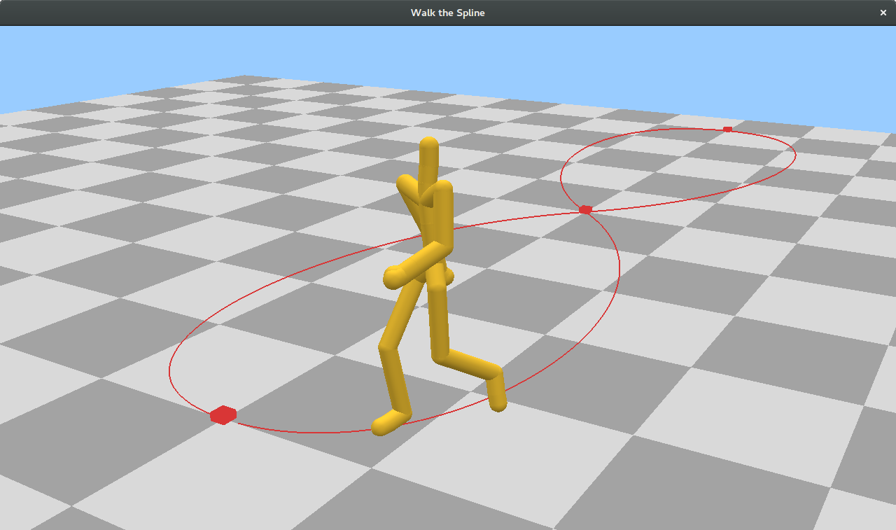
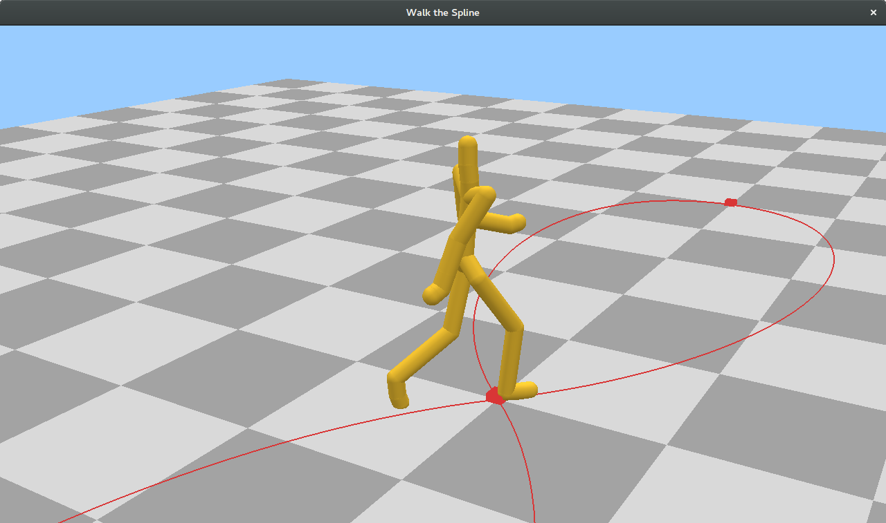
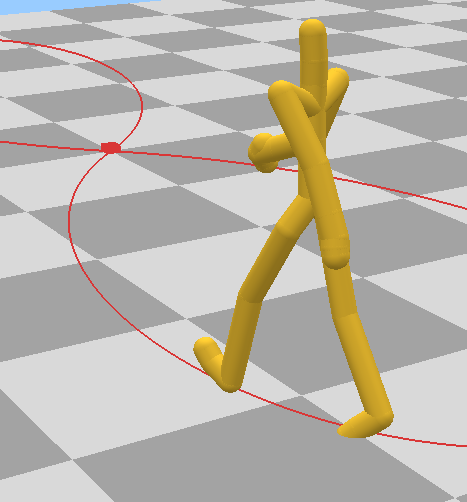
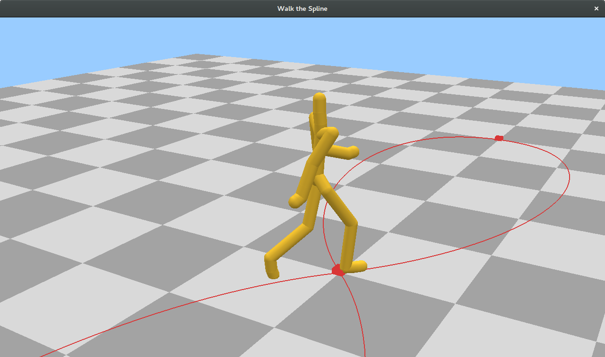
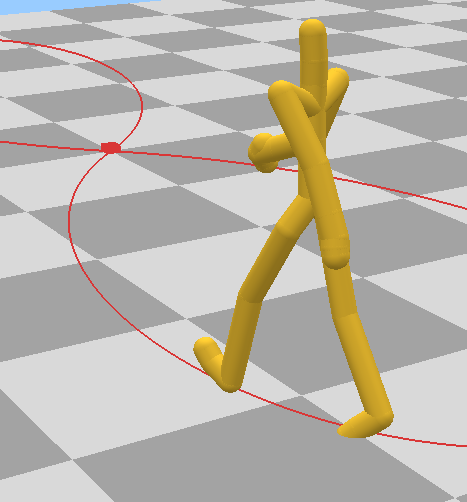

Walk The Spline
Description
A character follows a spline in a walking animation. The main part of this assignment was to implement the spline using cubic hermite interpolation and do heirarchical transformations on the bones. The motion capture and bone data/code was given to us, but we had to perform the correct transformations on the bones at each frame, according to where the character is on the spline. Each control point on the spline has a value and derivative, which control the direction and speed of the character.
Code
Go to Github pageTools Used
- Modern OpenGL 3 for drawing
- SDL2 for the windowing and user input
- Motion capture and bone data for the animations
Features
- Cubic Hermite Spline
- Uses motion capture and bone data
- Heirarchical transformations to get the bones of the body to move and rotate correctly
- Adjustable camera
Images:





